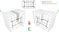

dislocation

Definition: In materials science, a dislocation or Taylor's dislocation is a linear crystallographic defect or irregularity within a crystal structure that contains an abrupt change in the arrangement of atoms. The movement of dislocations allow atoms to slide over each other at low stress levels and is known as glide or slip. The crystalline order is restored on either side of a glide dislocation but the atoms on one side have moved by one position. The crystalline order is not fully restored with a partial dislocation. A dislocation defines the boundary between slipped and unslipped regions of material and as a result, must either form a complete loop, intersect other dislocations or defects, or extend to the edges of the crystal. A dislocation can be characterised by the distance and direction of movement it causes to atoms which is defined by the Burgers vector. Plastic deformation of a material occurs by the creation and movement of many dislocations. The number and arrangement of dislocations influences many of the properties of materials.
Source: Wikipedia
Wikipedia Page (Something wrong with this association? Let us know.)
Wikidata Page (Something wrong with this association? Let us know.)